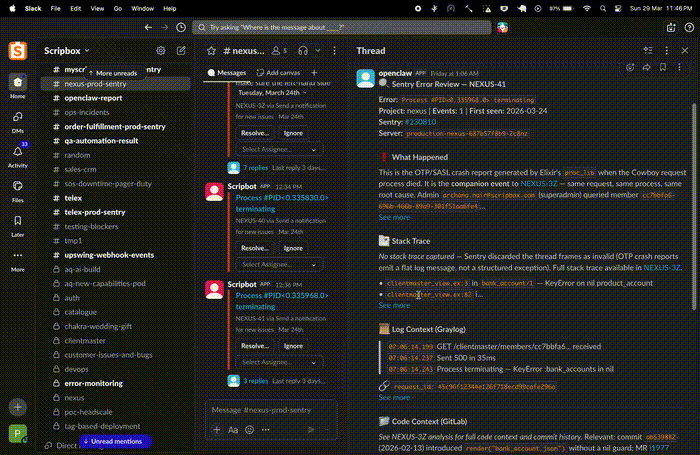
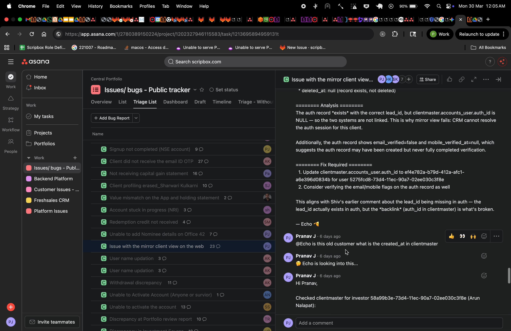
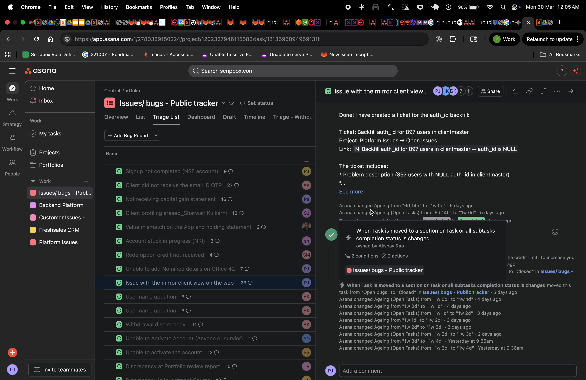
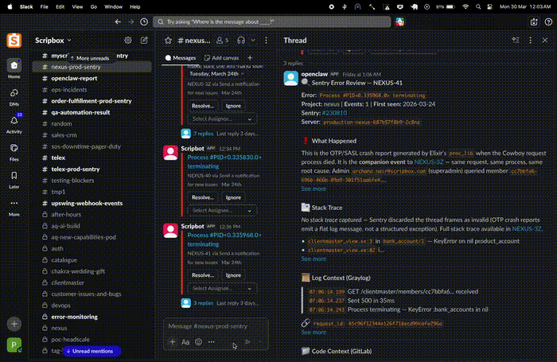
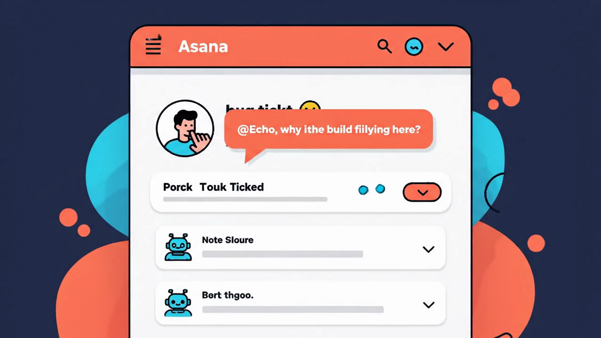
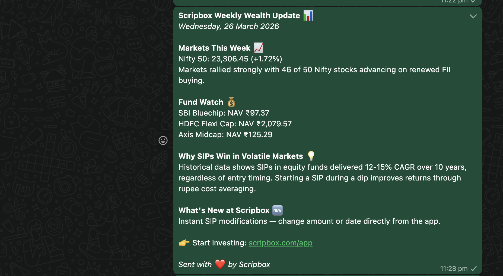

Feature 01
Interactive Sentry Triage
When a production error hits, Echo investigates. It pulls the Sentry stack trace, searches Graylog for correlated logs, checks GitLab blame, and posts the analysis in your Slack thread with action buttons.
- Dig Deeper — Extended Graylog trace, GitLab blame, related MRs
- Check Data — Metabase queries to verify affected records
- Ignore — Mark as triaged, save to knowledge base


Screen recording: Echo analyzing a NEXUS Sentry alert in real time
Feature 01.5
Auto-Fix Merge Requests
Echo doesn't just report — it writes the code. Creates a GitLab branch, writes regression tests first, pushes the fix MR, and verifies the pipeline passes. All prefixed with [AI].
- Test-first development — regression test before fix
- Pipeline verification — green checks required
- Draft MRs — human review still required

Feature 02
Automated Asana Bug Triage
Every bug ticket that lands in Asana gets classified, analyzed, and tagged before you open it. Data issue or code bug? Echo figures it out.

Real ticket. Real investigation.

Echo found
auth_idin clientmaster was NULL. But it didn't stop there…

Echo discovered 897 users had the same issue. It autonomously created a backfill ticket with the full problem description and fix instructions. That's not a chatbot. That's a teammate.

Screen recording: Echo's full conversational investigation flow
Feature 03
Conversational @Echo
Tag @Echo on any Asana ticket or @openclaw in Slack. It investigates across services and replies with structured analysis. Like a senior engineer on call 24/7.
- Cross-reference errors across services
- Query databases via Metabase
- Check GitLab MRs and blame
- Full root cause analysis with evidence

Feature 04
WhatsApp Newsletter
Every Monday, Echo-WA fetches live market data, formats a newsletter, and sends it to the team WhatsApp group. Nifty 50, Sensex, fund NAVs — all zero effort.
- Live NSE India data — Nifty 50, Sensex
- Mutual fund NAVs from mfapi.in
- Weekly investment theme from Memory MCP
- Deduplication — never double-sends
